Configuración de dependencias para trabajar con Jest, Supertest y ESLint
El proyecto incorpora scripts específicos para el módulo de platos: lint, corrección automática, pruebas y cobertura. El código de la captura corresponde a backend/package.json.
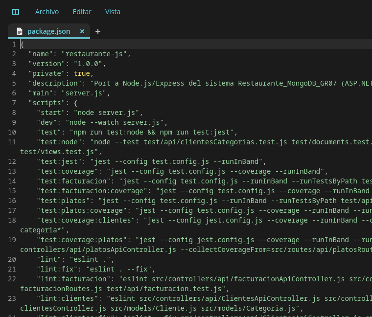
backend/package.json: scripts test:platos, test:platos:coverage y test:coverage:platos.npm install → descarga las dependencias necesarias dentro de la carpeta node_modules.
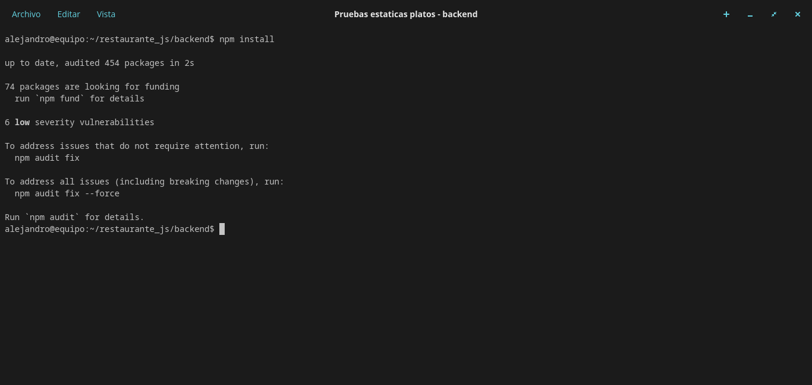
La instalación se ejecutó en backend/, el workspace que contiene Express, MongoDB, Jest y Supertest.
npm audit fix → corrige vulnerabilidades conocidas utilizando paquetes en versiones estables.
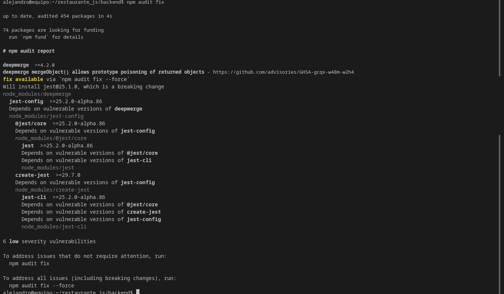
npm audit fix: 6 vulnerabilidades de severidad baja en deepmerge, dependencia transitiva de Jest.No se aplicó npm audit fix --force: la salida advierte que instalaría jest@25.1.0, un cambio incompatible con la versión actual del proyecto.
Revisión de variables sin usar, sintaxis o errores de tipiado en el controlador, las rutas, el modelo y la suite de pruebas.
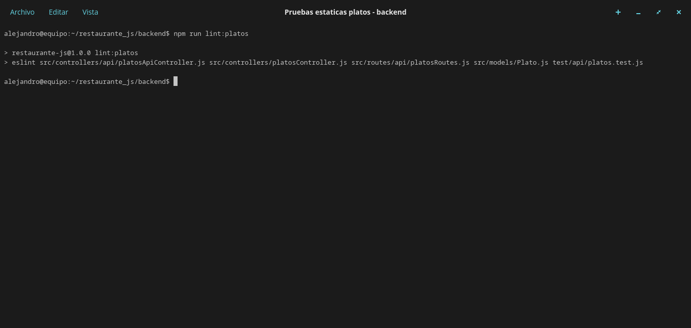
npm run lint:platos terminó sin errores ni advertencias para los cinco archivos analizados.Corrección automática de los problemas que ESLint puede resolver sin intervención manual.
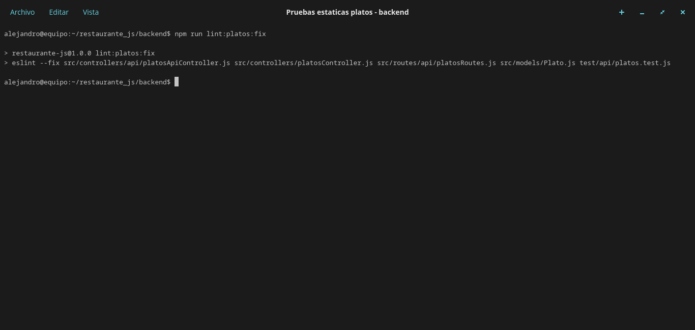
Archivos revisados: platosApiController.js, platosController.js, platosRoutes.js, Plato.js y test/api/platos.test.js.
Los dos scripts siguientes concentran la verificación y la corrección automática del módulo de platos.
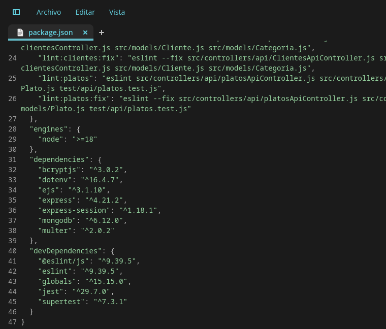
backend/package.json: definición de lint:platos y lint:platos:fix junto con las dependencias de desarrollo.Suite backend/test/api/platos.test.js: conexión real a MongoDB Atlas, CRUD completo y validación de respuestas de error.
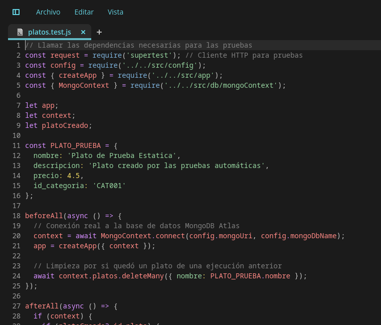
afterAll./api/v1/platos: devuelve 200 y una lista JSON./api/v1/platos: crea un plato válido y devuelve 201./api/v1/platos/:id: consulta el plato recién creado y devuelve 200./api/v1/platos/:id: actualiza nombre y precio, y devuelve 200./api/v1/platos/:id: elimina el plato y devuelve 200.La suite usa la base de datos real y elimina los documentos creados durante la ejecución para no dejar datos residuales.
Resultado de npm run test:platos con Jest y Supertest.
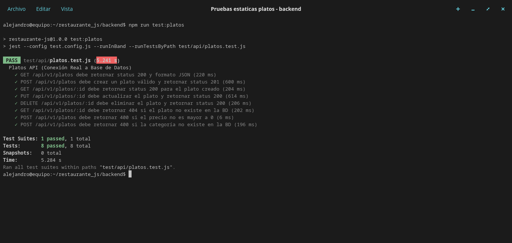
8/8 pruebas aprobadas. La ejecución incluye los cinco casos de éxito del CRUD y los tres casos de fracaso controlado.
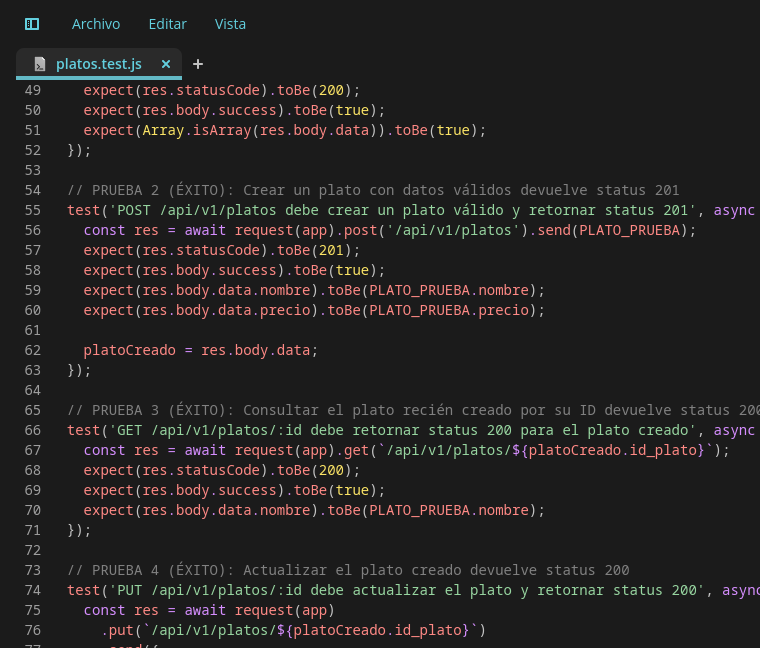
Las pruebas de fracaso comprueban que la API rechace las peticiones inválidas y no altere la base de datos.
/api/v1/platos/PLA_NO_EXISTE_999: devuelve 404 y success: false./api/v1/platos con precio: 0: devuelve 400 y el campo precio./api/v1/platos con CAT_NO_EXISTE_999: devuelve 400 y el campo id_categoria.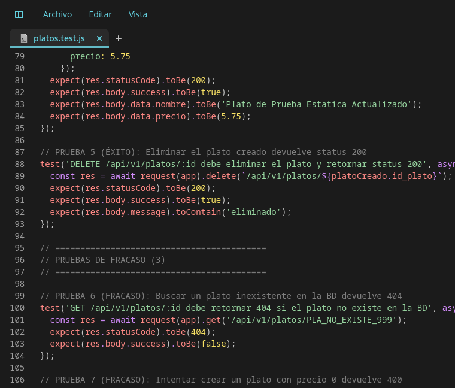
Estas pruebas también finalizaron correctamente: el resultado esperado es una respuesta de error, no una excepción.
El controlador implementa las operaciones CRUD y las reglas de negocio del módulo: validación de campos, precio positivo y existencia de la categoría.
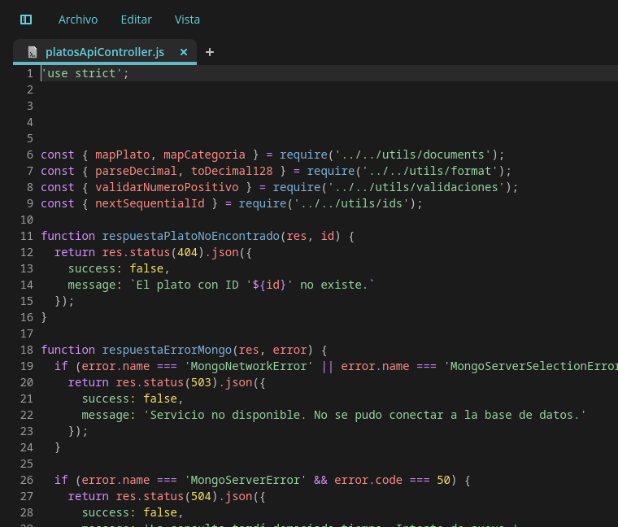
platosApiController.js: utilidades de mapeo, respuestas de error de MongoDB y consulta de platos.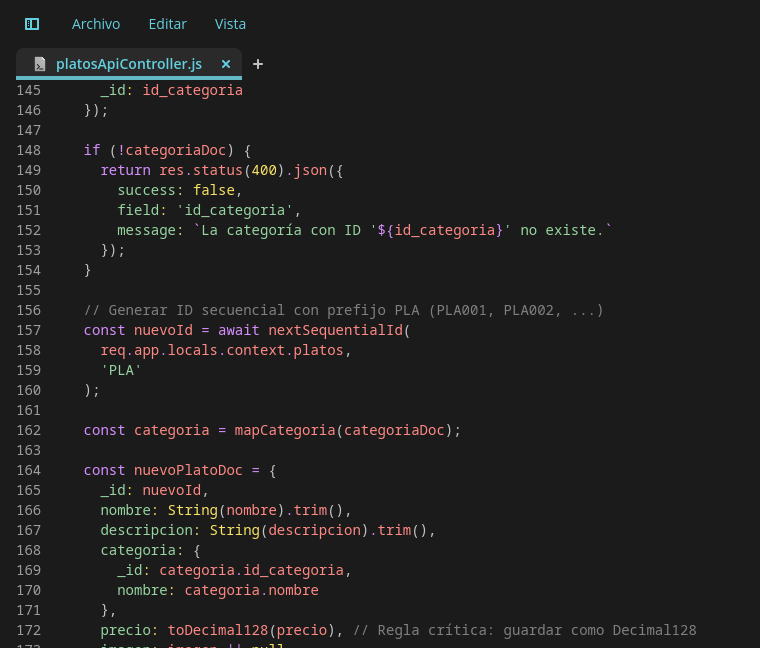
crearPlato: el precio debe ser mayor a 0 y la categoría debe existir en la base de datos.Rutas cubiertas: GET /api/v1/platos, GET /api/v1/platos/:id, POST /api/v1/platos, PUT /api/v1/platos/:id y DELETE /api/v1/platos/:id.
Resultado de npm run test:coverage:platos, limitado al controlador y a las rutas del módulo de platos.
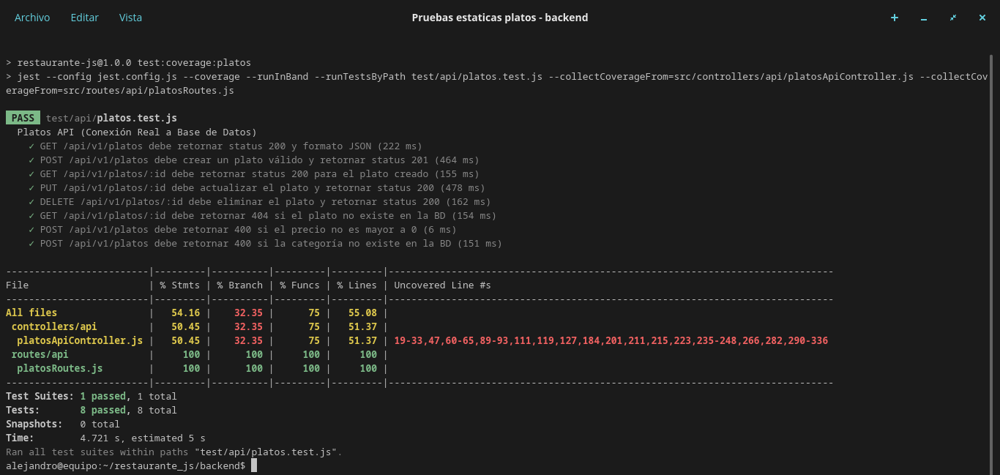
| Archivo / conjunto | % Stmts | % Branch | % Funcs | % Lines |
|---|---|---|---|---|
| All files | 54.16 | 32.35 | 75.00 | 55.08 |
platosApiController.js | 50.45 | 32.35 | 75.00 | 51.37 |
platosRoutes.js | 100.00 | 100.00 | 100.00 | 100.00 |
Las líneas sin cubrir corresponden principalmente a ramas de error de MongoDB y a la función auxiliar calcularCaloriasAlergenos, que no forma parte del CRUD probado en esta suite.